<!--This file created 15/12/97 14:38 by Claris Home Page version 2.0-->
<HTML>
<!-- Mirrored from www.nyu.edu/web.communications/jimtest/trees/jumbarrich.html by HTTrack Website Copier/3.x [XR&CO'2014], Mon, 08 Feb 2021 15:14:29 GMT -->
<!-- Added by HTTrack --><meta http-equiv="content-type" content="text/html;charset=UTF-8" /><!-- /Added by HTTrack -->
<HEAD>
   <TITLE>jumbarrich</TITLE>
   <META NAME=GENERATOR CONTENT="Claris Home Page 2.0">
   <X-SAS-WINDOW TOP=90 BOTTOM=480 LEFT=12 RIGHT=542>
</HEAD>
<BODY background="sunflowr.gif">

<BLOCKQUOTE><P><CENTER><FONT SIZE="+4">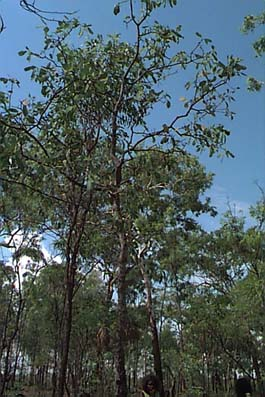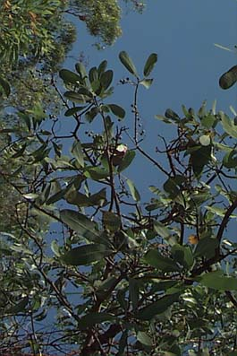</FONT></CENTER></P>

<P><CENTER><B><FONT SIZE="+3">JUMBARRICH</FONT></B></CENTER></P>

<P><FONT SIZE="+1">Jumbarrich is a tree. It grows in the bush.
Jumbarrich has a long, skinny, straight trunk. The leaves are
smooth,long and green. Its fruit is called green plum.</FONT></P>

<P><FONT SIZE="+1">Jumbarrich fruit grows every November. In Burarra
we call this season Jemberr. This is the beginning of our wet
season.</FONT></P>

<P><FONT SIZE="+1">The fruit is small. There are lots of fruit on the
trees. We shake the trunk then the fruit falls down. We like to eat
the fruit. It tastes sweet.</FONT></P>

<P><CENTER><B><FONT SIZE="+2">Jumbarrich - Medicine</FONT></B>
</CENTER></P>

<P><FONT SIZE="+1">Jumbarrich is good to use as a medicine for
toothache. We use the branches. We burn the branch and then we crush
it up. Then we put it on our tooth.</FONT></P>

<P><FONT SIZE="+1">Jumbarrich makes us strong and healthy. We eat the
fruit for coughing and when we feel weak.</FONT></P>

<P><TABLE BORDER=1>
   <TR>
      <TD>
         <P><FONT SIZE="+4">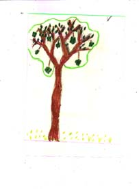</FONT>
      </TD><TD>
         <BLOCKQUOTE><P><B><FONT SIZE="+1">Jumbarrich is a tree. It's
         got lots of fruit. All the people come along, then they
         shake the long straight tree trunk. Then the people eat the
         fruit, they taste good. Alishia</FONT></B></P></BLOCKQUOTE>
         
         <P>&nbsp;
      </TD></TR>
</TABLE><TABLE BORDER=1>
   <TR>
      <TD>
         <P><FONT SIZE="+2">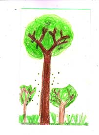</FONT>
      </TD><TD>
         <P><B><FONT SIZE="+1">We like to eat jumbarrich. It tastes
         good. The people go away and get some fruit in the bush.
         Andrea</FONT></B>
      </TD></TR>
</TABLE><TABLE BORDER=1>
   <TR>
      <TD>
         <BLOCKQUOTE><P><FONT SIZE="+2">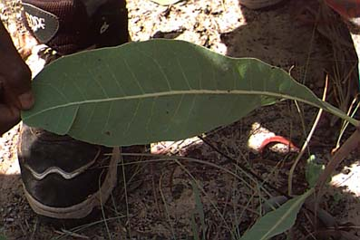</FONT></P></BLOCKQUOTE>
         
         <P>&nbsp;
      </TD><TD>
         <BLOCKQUOTE><P><FONT SIZE="+2">This is a jumbarrich
         leaf.</FONT></P>
         
         <P><FONT SIZE="+2">Jumbarrich has long, green.leaves.</FONT>
         </P>
         
         <P><FONT SIZE="+2">Kersey</FONT></P></BLOCKQUOTE>
         
         <P>&nbsp;
      </TD></TR>
</TABLE><TABLE BORDER=1>
   <TR>
      <TD>
         <P><FONT SIZE="+2">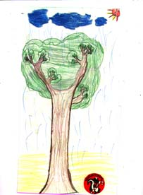</FONT>
      </TD><TD>
         <BLOCKQUOTE><P><B><FONT SIZE="+1">This jumbarrich are very
         special. There are lots of fruit. They are very good and
         sweet. Kersey</FONT></B></P></BLOCKQUOTE>
         
         <P>&nbsp;
      </TD></TR>
</TABLE><FONT SIZE="+2">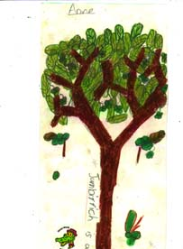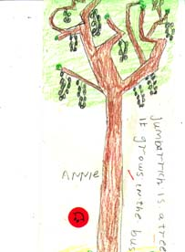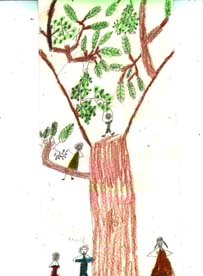</FONT></P>

<P><TABLE BORDER=1>
   <TR>
      <TD>
         <P><B><FONT SIZE="+3">Anne</FONT></B>
      </TD><TD>
         <P><B><FONT SIZE="+3">Annie</FONT></B>
      </TD><TD>
         <P><B><FONT SIZE="+3">Dane</FONT></B>
      </TD></TR>
</TABLE></P>

<P><CENTER><TABLE BORDER=1>
   <TR>
      <TD>
         <P><CENTER>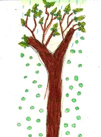<TABLE
         BORDER=0>
            <TR>
               <TD>
                  <P><CENTER><FONT SIZE="+2">Jodie</FONT></CENTER>
               </TD></TR>
         </TABLE></CENTER>
      </TD><TD>
         <P>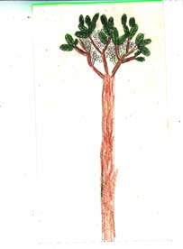<TABLE
         BORDER=0>
            <TR>
               <TD>
                  <P><CENTER><FONT SIZE="+2">Lionel</FONT></CENTER>
               </TD></TR>
         </TABLE>
      </TD></TR>
   <TR>
      <TD>
         <P>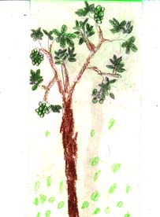
      </TD><TD>
         <P>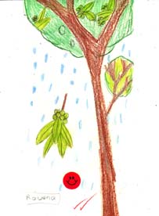
      </TD></TR>
</TABLE><TABLE  WIDTH="70%" HEIGHT=30>
   <TR>
      <TD>
         <P><CENTER><FONT SIZE="+2">Neil</FONT></CENTER>
      </TD><TD>
         <P><CENTER><FONT SIZE="+2">Rowena</FONT></CENTER>
      </TD></TR>
</TABLE><FONT SIZE="+3">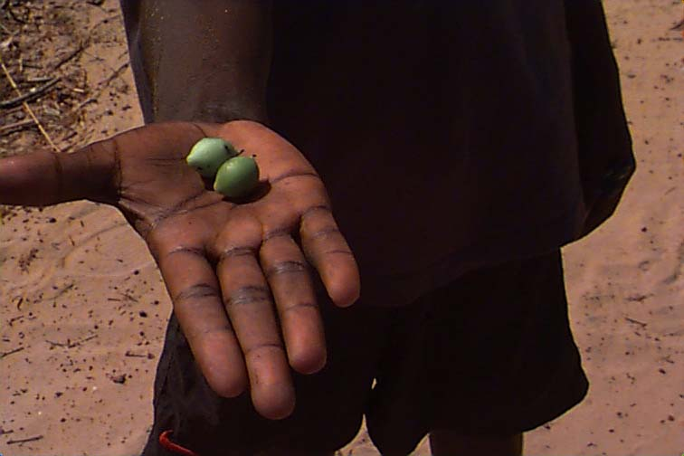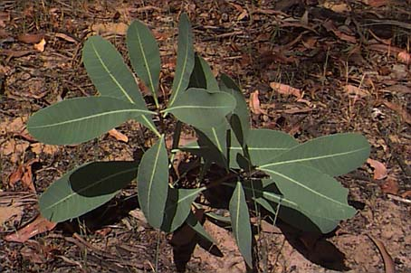</FONT></CENTER></P></BLOCKQUOTE>

<P><TABLE BORDER=0 CELLSPACING=4 CELLPADDING=8>
   <TR>
      <TD>
         <P><A HREF="home.html">home page</A>
      </TD><TD>
         <P><A HREF="manggu.html">manggu</A>
      </TD><TD>
         <P><A HREF="linksout.html">links</A>
      </TD></TR>
</TABLE></P>
</BODY>
<!-- Mirrored from www.nyu.edu/web.communications/jimtest/trees/jumbarrich.html by HTTrack Website Copier/3.x [XR&CO'2014], Mon, 08 Feb 2021 15:14:44 GMT -->
</HTML>
